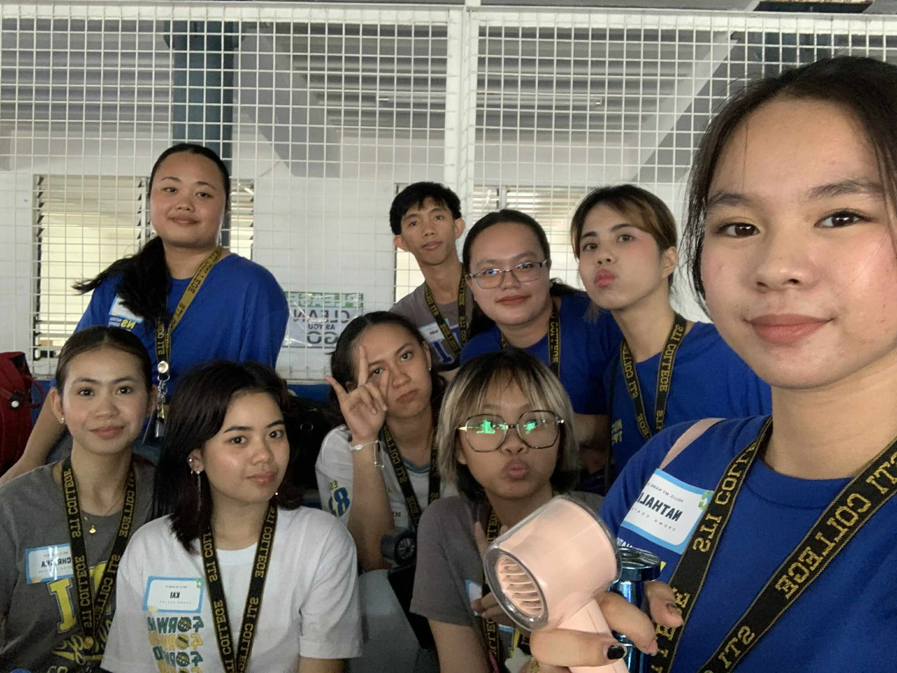
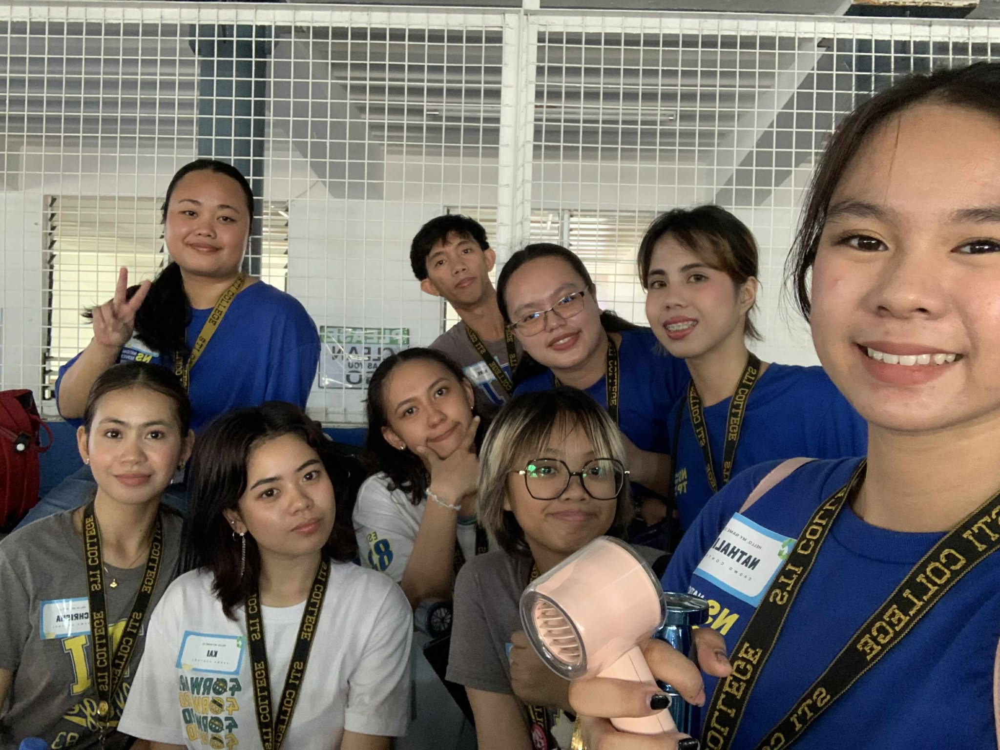
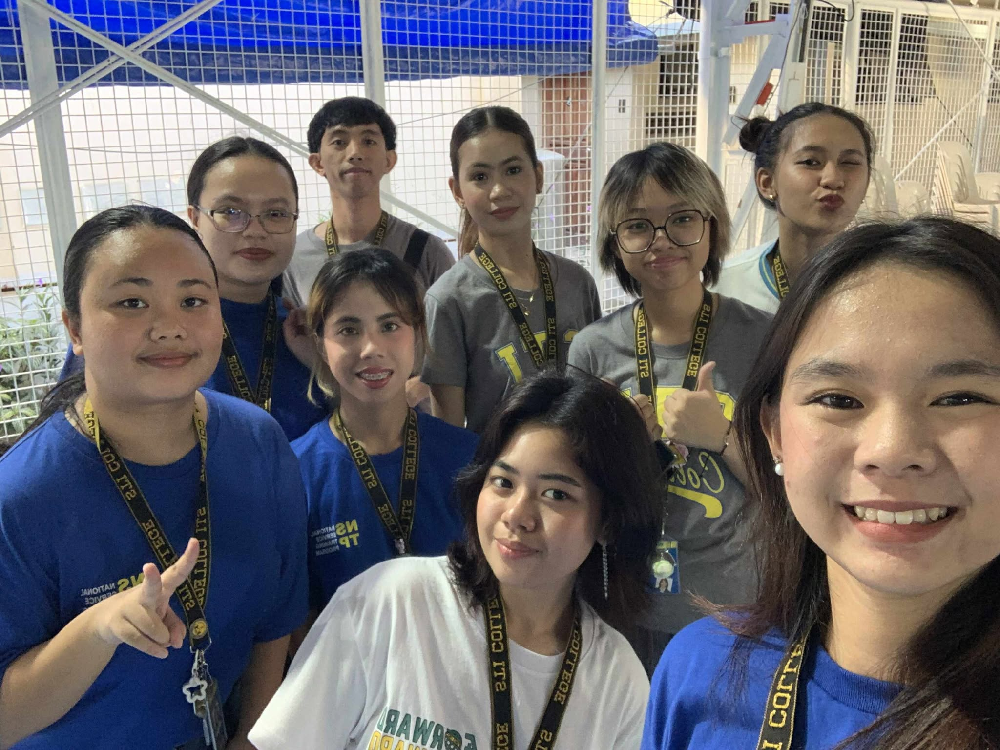

NSTP Journal - A Journey Together
-ˋˏ✄┈┈┈ Diary Entries _-_🖋
This is where the delegates share us their thoughts and reflections throughout their whole experince during the Summer Immersion
“It was my first time helping with a donation drive, and it was interesting to see how an event is formed and executed. We struggled with the time and flow, but I believe it was successful. Donating and seeing those in need smile was a joy. It’s an experience I wouldn’t want to forget especially with everyone smiling and thanking us after.”
- Ally
“It was enjoyable and fulfilling, despite how exhausting and challenging the heat was. Seeing people happy with what we shared made it worth it. If you have the privilege to help, then do so people will remember the kindness and impact you gave, and they’ll always be grateful.”
- Chrisha
“It felt like a rollercoaster ride! We went from calm to stressing real quick, but we were really excited to execute the program. I was hoping we could give more, only if we can. But I'm really glad that even with a small gesture like this, it gave a big help for others. On our way to a healthy environment!”
- Deinny
“It was fun and exhilarating. Even admist the summer heat, seeing the smiles of families and crew brought pure happiness. Helping through simple acts like a donation drive is a must, it’s fulfilling to know you’ve helped many, and it brings pride in how affection and cooperation exist in humanity.”
- Janelle
“It was really fun and enjoyable, plus there were so many memorable moments I experienced. All I can say is that even though the immersion was really stressful, I learned a lot from it. Even though there was a problem on the day of the immersion itself, everything still turned out successful.”
- Kai
“Participating in the Summer Immersion Program was challenging and fulfilling. As an introvert, I stepped out of my comfort zone and learned to appreciate collectivism. It was an eye-opener, I realized that compassion without action is not enough. I recall planning tasks like buying materials and ensuring safe delivery. The program succeeded through teamwork and actionable steps. I learned that working with others makes things easier, faster, and more enjoyable. Truly, "No Man Is An Island."”
- Mark
“It was a good experience. There was technicalities, but our group was able to manage it.”
- Nathalie
“It was a great experience, and the event was memorable because of the participants. Everyone does not have the same living conditions. We held the program in order to help and reach out to those who are less fortunate.”
- Sophia
“My experience was fun, even though it was exhausting. The immersion was memorable and rewarding. The participants were so happy and grateful, and I’ll always remember that joy in helping others. Despite the heat, everyone worked hard like it didn’t affect them. It was a proud moment for me. I realized how good it feels to help, that kindness, big or small, can make a big impact.”
- Dominique
This immersion was an eye-opener to every individual. Even amidst challenges, it was definitely fulfilling to see how an event is formed from scratch and then executed successfully. It was uplifting to see people who exerted effort and worked as one for a cause. It was not just a simple sharing; every step, material, idea, and time told a story. Behind the scenes there were inconveniences, but they brought the team closer to achieving goals. It signifies how powerful collective effort could affect the community.
Seeing the smiles on the faces of the families brought a genuine feeling of pure happiness to serve and assist others with simple acts, and it was evident that even the smallest things could profoundly impact many people. Watching their eyes light up over something as simple as an item was really heartwarming. Their gratitude paid off the team's efforts for them.
It is an inspiration to work hard and put more effort into reaching out and extending warmth and generosity to those in need. Being privileged enough is a thousand reasons to be a blessing for others. It's not about the things shared—it is about the kindness, empathy, humility, and compassion shown.